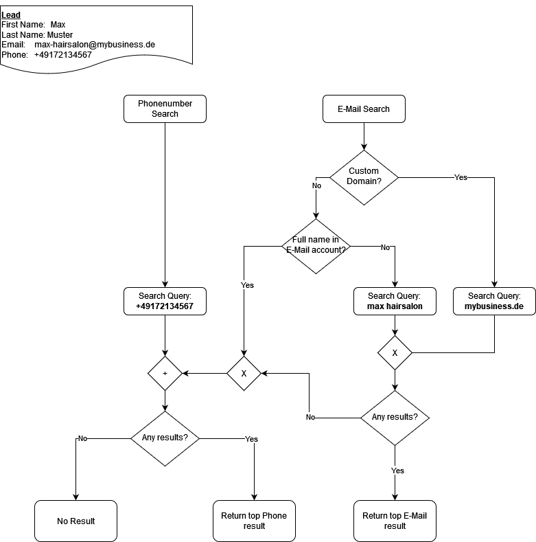
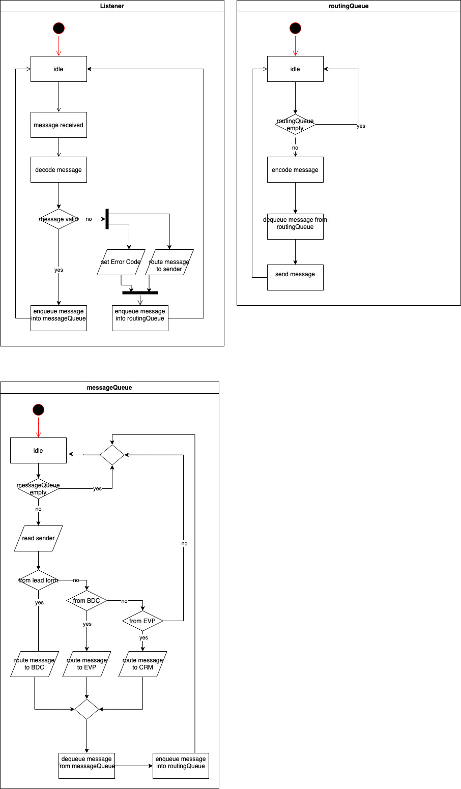

Build Documentation
Creating the Environment
The repository contains the file .env.template. This file is a template for
the environment variables that need to be set for the application to run. Copy
this file into a file called .env at the root level of this repository and
fill in all values with the corresponding secrets.
To create the virtual environment in this project you must have pipenv
installed on your machine. Then run the following commands:
# for development environment
pipenv install --dev
# for production environment
pipenv install
To work within the environment you can now run:
# to activate the virtual environment
pipenv shell
# to run a single command
pipenv run <COMMAND>
Build Process
This application is built and tested on every push and pull request creation
through Github actions. For this, the pipenv environment is installed and then
the code style is checked using flake8. Finally, the tests/ directory is
executed using pytest and a test coverage report is created using coverage.
The test coverage report can be found in the Github actions output.
In another task, all used packages are tested for their license to ensure that the software does not use any copy-left licenses and remains open source and free to use.
If any of these steps fail for a pull request the pull request is blocked from being merged until the corresponding step is fixed.
Furthermore, it is required to install the pre-commit hooks as described here. This ensures uniform coding style throughout the project as well as that the software is compliant with the REUSE licensing specifications.
Running the app
To run the application the pipenv environment must be installed and all needed
environment variables must be set in the .env file. Then the application can
be started via
pipenv run python src/main.py
Pre-Commit Hooks
This repository uses pre-commit hooks to ensure a consistent and clean file organization. Each registered hook will be executed when committing to the repository. To ensure that the hooks will be executed they need to be installed using the following command:
pre-commit install
The following things are done by hooks automatically:
formatting of python files using black and isort
formatting of other files using prettier
syntax check of JSON and yaml files
adding new line at the end of files
removing trailing whitespaces
prevent commits to
devandmainbranchcheck adherence to REUSE licensing format
User Documentation
Project vision
This product will give our industry partner a tool at hand, that can effectively increase conversion of their leads to customers, primarily by providing the sales team with valuable information. The modular architecture makes our product future-proof, by making it easy to add further data sources, employ improved prediction models or to adjust the output format if desired.
Project mission
The mission of this project is to enrich historical data about customers and recent data about leads (with information from external sources) and to leverage the enriched data in machine learning, so that the estimated Merchant Size of leads can be predicted.
Usage
To execute the final program, ensure the environment is installed (refer to
build-documents.md) and run python .\src\main.py either locally or via the
build process. The user will be presented with the following options:
Choose demo:
(0) : Base Data Collector
(1) : Data preprocessing
(2) : ML model training
(3) : Merchant Size Predictor
(4) : Exit
(0) : Base Data Collector
This is the data enrichment pipeline, utilizing multiple data enrichment steps. Configuration options are presented:
Do you want to list all available pipeline configs? (y/N) If y:
Please enter the index of requested pipeline config:
(0) : config_sprint09_release.json
(1) : just_run_search_offeneregister.json
(2) : run_all_steps.json
(3) : Exit
(0) Coniguration used in sprint 9.
(1) Coniguration for OffeneRegister.
(2) Running all the steps of the pipeline without steps selection.
(3) Exit to the pipeline step selection.
If n: proceed to pipeline step selection for data enrichment. Subsequent
questions arise:
Run Scrape Address (will take a long time)(y/N)?
Run Search OffeneRegister (will take a long time)(y/N)?
Run Phone Number Validation (y/N)?
Run Google API (will use token and generate cost!)(y/N)?
Run Google API Detailed (will use token and generate cost!)(y/N)?
Run openAI GPT Sentiment Analyzer (will use token and generate cost!)(y/N)?
Run openAI GPT Summarizer (will use token and generate cost!)(y/N)?
Run Smart Review Insights (will take looong time!)(y/N)?
Run Regionalatlas (y/N)?
Run Scrape Address (will take a long time)(y/N)?: This enrichment step scrapes the leads website for an address using regex.Run Search OffeneRegister (will take a long time)(y/N)?: This enrichment step searches for company-related data using the OffeneRegisterAPI.Run Phone Number Validation (y/N)?: This enrichment step checks if the provided phone numbers are valid and extract geographical information using geocoder.Run Google API (will use token and generate cost!)(y/N)?: This enrichment step tries to the correct business entry in the Google Maps database. It will save basic information along with the place id, that can be used to retrieve further detailed information and a confidence score that should indicate the confidence in having found the correct result.Run Google API Detailed (will use token and generate cost!)(y/N)?: This enrichment step tries to gather detailed information for a given google business entry, identified by the place ID.Run openAI GPT Sentiment Analyzer (will use token and generate cost!)(y/N)?: This enrichment step performs sentiment analysis on reviews using GPT-4 model.Run openAI GPT Summarizer (will use token and generate cost!)(y/N)?: This enrichment step attempts to download a businesses website in raw html format and pass this information to OpenAIs GPT, which will then attempt to summarize the raw contents and extract valuable information for a salesperson.Run Smart Review Insights (will take looong time!)(y/N)?: This enrichment step enhances review insights for smart review analysisRun Regionalatlas (y/N)?: This enrichment step will query the RegionalAtlas database for location based geographic and demographic information, based on the address that was found for a business through Google API.
It is emphasized that some steps are dependent on others, and excluding one might result in dependency issues for subsequent steps.
After selecting the desired enrichtment steps, a prompt asks the user to
Set limit for data points to be processed (0=No limit) such that the user
chooses whether it apply the data enrichment steps for all the leads (no limit)
or for a certain number of leads.
Note: In case DATABASE_TYPE="S3" in your .env file, the limit will be
removed, in order to enrich all the data into s3://amos--data--events S3
bucket.
(1) : Data preprocessing
Post data enrichment, preprocessing is crucial for machine learning models, involving scaling, numerical outlier removal, and categorical one-hot encoding. The user is prompted with questions:
Filter out the API-irrelevant data? (y/n): This will filter out all the leads
that couldn’t be enriched during the data enrichtment steps, removing them would
be useful for the Machine Learning algorithms, to avoid any bias introduced,
even if we pad the features with zeros.
Run on historical data ? (y/n) Note: DATABASE_TYPE should be S3!: The user has
to have DATABASE_TYPE="S3" in .env file in order to run on historical data,
otherwise, it will run locally. After preprocessing, the log will show where the
preprocessed_data is stored.
(2) : ML model training
Six machine learning models are available:
(0) : Random Forest
(1) : XGBoost
(2) : Naive Bayes
(3) : KNN Classifier
(4) : AdaBoost
(5) : LightGBM
After selection of the desired machine learning model, the user would be prompted with a series of questions:
Load model from file? (y/N): In case ofy, the program will ask for a file location of a previously saved model to use for predictions and testing.Use 3 classes ({XS}, {S, M, L}, {XL}) instead of 5 classes ({XS}, {S}, {M}, {L}, {XL})? (y/N): In case ofy, the S, M, L labels of the data would be grouped alltogether as one class such that the training would be on 3 classes ({XS}, {S, M, L}, {XL}) instead of the 5 classes. It is worth noting that grouping the S, M and L classes alltogether as one class resulted in boosting the classification performance.Do you want to train on a subset of features? (0) : ['Include all features'] (1) : ['google_places_rating', 'google_places_user_ratings_total', 'google_places_confidence', 'regional_atlas_regional_score']
0 would include all the numerical and categorical one-hot encoded features,
while 1 would choose a small subset of data as features for the machine
learning models
Then, the user would be given multiple options:
(1) Train
(2) Test
(3) Predict on single lead
(4) Save model
(5) Exit
(1): Train the current model on the current trainig dataset.
(2): Test the current model on the test dataset, displaying the mean squared error.
(3): Choose a single lead from the test dataset and display the prediction and true label.
(4): Save the current model to the
amos--models/modelson S3 in case ofDATABASE_TYPE=S3, otherwise it will save it locally.(5): Exit the EVP submenu
(3) : Merchant Size Predictor
After training, testing, and saving the model, the true essence of models lies not just in crucial task of generating forecasted predictions for previously unseen leads.
(4) : Exit
Gracefully exit the program.
Design Documentation
Introduction
This application serves as a pivotal tool employed by our esteemed industry partner, SumUp, for the enrichment of information pertaining to potential leads garnered through their sign-up website. The refined data obtained undergoes utilization in the prediction of potential value that a lead could contribute to SumUp, facilitated by a sophisticated machine learning model. The application is branched into two integral components: the Base Data Collector (BDC) and the Merchant Size Predictor (MSP).
Component Diagram

External Software
Lead Form (LF)
The Lead Form is submitted by every new lead and provides a small set of data about the lead.
Customer Relationship Management (CRM)
The project output is made available to the sales team. This can be done in different ways, e.g. writing to a Google Sheet or pushing directly to SalesForce.
Components
Base Data Collector (BDC)
General description
The Base Data Collector (BDC) plays a crucial role in enriching the dataset related to potential client leads. The initial dataset solely comprises fundamental lead information, encompassing the lead’s first and last name, phone number, email address, and company name. Recognizing the insufficiency of this baseline data for value prediction, the BDC is designed to query diverse data sources, incorporating various Application Programming Interfaces (APIs), to enrich the provided lead data.
Design
The different data sources are organised as steps in the program. Each step extends from a common parent class and implements methods to validate that it can run, perform the data collection from the source and perform clean up and statistics reports for itself. These steps are then collected in a pipeline object sequentially performing the steps to enhance the given data with all chosen data sources. The data sources include:
inspecting the possible custom domain of the email address.
retrieving multiple data from the Google Places API.
analysing the sentiment of Google reviews using GPT.
inspecting the surrounding areas of the business using the Regional Atlas API.
searching for company-related data using the OffeneRegisterAPI.
performing sentiment analysis on reviews using GPT-4 model.
Data storage
All data for this project is stored in CSV files in the client’s AWS S3 storage. The files here are split into three buckets. The input data and enhanced data are stored in the events bucket, pre-processed data ready for use of ML models is stored in the features bucket and the used model and inference is stored in the model bucket. Data preprocessing Following data enrichment, a pivotal phase in the machine learning pipeline is data preprocessing, an essential process encompassing scaling operations, numerical outlier elimination, and categorical one-hot encoding. This preprocessing stage serves transforms the output originating from the BDC into feature vectors, thereby rendering them amenable for predictive analysis by the machine learning model.
Merchant Size Predictor (MSP) / Estimated Value Predictor (EVP)
Historical Note
The primary objective of the Estimated Value Predictor was initially oriented towards forecasting the estimated life-time value of leads. However, this objective evolved during the project’s progression, primarily influenced by labelling considerations. The main objective has therefore changed to predicting only the size of a given lead, which can then be used as an indication for their potential life-time value. As a consequence, the component in questions is now (somewhat inconsistently) either referred to as the Estimated Value Predictor (EVP) or as the Merchant Size Predictor (MSP).
Design
In the context of Merchant Size Prediction, our aim is to leverage pre-trained ML models on new lead data. By applying these models, we intend to predict the potential Merchant Size, thereby assisting SumUp in prioritizing leads and making informed decisions on which leads to contact first. This predictive approach enhances the efficiency of lead management and optimizes resource allocation for maximum impact.
The machine learning model, integral to the MSP, undergoes training on proprietary historical data sourced from SumUp. The training process aims to discern discriminative features that effectively stratify each class within the Merchant Size taxonomy. It is imperative to note that the confidentiality of the underlying data prohibits its public disclosure.
Data Fields
Data Field Definitions
This document outlines the data fields obtained for each lead. The data can be sourced from the online Lead Form or be retrieved from the internet using APIs.
Data Field Table
The most recent Data Fields table can now be found in a separate CSV File.
Links to Data Sources:
Lead form: https://www.sumup.com/de-de/kontaktieren-vertriebsteam/
Google Places API: https://developers.google.com/maps/documentation/places/web-service/overview
OpenAI API: https://platform.openai.com/docs/overview
Meta API: https://developers.facebook.com/docs/graph-api/overview
Data Fields CSV
The following table highlights the data fields obtained for each lead. The acquisition of such data may derive from the Lead Form or may be extracted from external sources utilizing APIs.
Field Name |
Type |
Description |
Data source |
Dependencies |
Example |
|---|---|---|---|---|---|
Last Name |
string |
Last name of the lead |
Lead data |
Mustermann |
|
First Name |
string |
First name of the lead |
Lead data |
Mustername |
|
Company / Account |
string |
Company name of the lead |
Lead data |
Mustercompany |
|
Phone |
string |
Phone number of the lead |
Lead data |
49 1234 56789 |
|
string |
Email of the lead |
Lead data |
|||
domain |
string |
The domain of the email is the part that follows the “@” symbol, indicating the organization or service hosting the email address. |
processing |
example.com |
|
email_valid |
boolean |
Checks if the email is valid. |
email_validator package |
True/False |
|
first_name_in_account |
boolean |
Checks if first name is written in “Account” input |
processing |
First Name |
True/False |
last_name_in_account |
boolean |
Checks if last name is written in “Account” input |
processing |
Last Name |
True/False |
number_formatted |
string |
Phone number (formatted) |
phonenumbers package |
Phone |
49123456789 |
number_country |
string |
Country derived from phone number |
phonenumbers package |
Phone |
Germany |
number_area |
string |
Area derived from phone number |
phonenumbers package |
Phone |
Erlangen |
number_valid |
boolean |
Indicator weather a phone number is valid |
phonenumbers package |
Phone |
True/False |
number_possible |
boolean |
Indicator weather a phone number is possible |
phonenumbers package |
Phone |
True/False |
google_places_place_id |
string |
Place ID used by Google |
Google Places API |
Company / Account |
|
google_places_business_status |
string |
Business Status |
Google Places API |
Company / Account |
Operational |
google_places_formatted_address |
string |
Formatted address |
Google Places API |
Company / Account |
Musterstr.1 |
google_places_name |
string |
Business Name |
Google Places API |
Company / Account |
Mustername |
google_places_user_ratings_total |
integer |
Total number of ratings |
Google Places API |
Company / Account |
100 |
google_places_rating |
float |
Average star rating |
Google Places API |
Company / Account |
4.5 |
google_places_price_level |
float |
Price level (1-3) |
Google Places API |
Company / Account |
|
google_places_candidate_count_mail |
integer |
Number of results from E-Mail based search |
Google Places API |
Company / Account |
1 |
google_places_candidate_count_phone |
integer |
Number of results from Phone based search |
Google Places API |
Company / Account |
1 |
google_places_place_id_matches_phone_search |
boolean |
Indicator weather phone based and EMail based search gave the same result |
Google Places API |
Company / Account |
True/False |
google_places_confidence |
float |
Indicator of confidence in the Google result |
processing |
0.9 |
|
google_places_detailed_website |
string |
Link to business website |
Google Places API |
Company / Account |
www.musterwebsite.de |
google_places_detailed_type |
list |
Type of business |
Google Places API |
Company / Account |
[“florist”, “store”] |
reviews_sentiment_score |
float |
Sentiment score between -1 and 1 for the reviews |
GPT |
Google reviews |
0.9 |
regional_atlas_pop_density |
float |
Population density |
Regional Atlas |
google_places_formatted_address |
2649.6 |
regional_atlas_pop_development |
float |
Population development |
Regional Atlas |
google_places_formatted_address |
-96.5 |
regional_atlas_age_0 |
float |
Age group |
Regional Atlas |
google_places_formatted_address |
16.3 |
regional_atlas_age_1 |
float |
Age group |
Regional Atlas |
google_places_formatted_address |
8.2 |
regional_atlas_age_2 |
float |
Age group |
Regional Atlas |
google_places_formatted_address |
31.1 |
regional_atlas_age_3 |
float |
Age group |
Regional Atlas |
google_places_formatted_address |
26.8 |
regional_atlas_age_4 |
float |
Age group |
Regional Atlas |
google_places_formatted_address |
17.7 |
regional_atlas_pop_avg_age |
float |
Average population age |
Regional Atlas |
google_places_formatted_address |
42.1 |
regional_atlas_per_service_sector |
float |
Regional Atlas |
google_places_formatted_address |
88.4 |
|
regional_atlas_per_trade |
float |
Regional Atlas |
google_places_formatted_address |
28.9 |
|
regional_atlas_employment_rate |
float |
Employment rate |
Regional Atlas |
google_places_formatted_address |
59.9 |
regional_atlas_unemployment_rate |
float |
Unemployment rate |
Regional Atlas |
google_places_formatted_address |
6.4 |
regional_atlas_per_long_term_unemployment |
float |
Long term unemployment |
Regional Atlas |
google_places_formatted_address |
49.9 |
regional_atlas_investments_p_employee |
float |
Investments per employee |
Regional Atlas |
google_places_formatted_address |
6.8 |
regional_atlas_gross_salary_p_employee |
float |
Gross salary per employee |
Regional Atlas |
google_places_formatted_address |
63.9 |
regional_atlas_disp_income_p_inhabitant |
float |
Income per inhabitant |
Regional Atlas |
google_places_formatted_address |
23703 |
regional_atlas_tot_income_p_taxpayer |
float |
Income per taxpayer |
Regional Atlas |
google_places_formatted_address |
45.2 |
regional_atlas_gdp_p_employee |
float |
GDP per employee |
Regional Atlas |
google_places_formatted_address |
84983 |
regional_atlas_gdp_development |
float |
GDP development |
Regional Atlas |
google_places_formatted_address |
5.2 |
regional_atlas_gdp_p_inhabitant |
float |
GDP per inhabitant |
Regional Atlas |
google_places_formatted_address |
61845 |
regional_atlas_gdp_p_workhours |
float |
GDP per workhours |
Regional Atlas |
google_places_formatted_address |
60.7 |
regional_atlas_pop_avg_age_zensus |
float |
Average population age (from zensus) |
Regional Atlas |
google_places_formatted_address |
41.3 |
regional_atlas_regional_score |
float |
Regional score |
Regional Atlas |
google_places_formatted_address |
3761.93 |
review_avg_grammatical_score |
float |
Average grammatical score of reviews |
processing |
google_places_place_id |
0.56 |
review_polarization_type |
string |
Polarization type of review ratings |
processing |
google_places_place_id |
High-Rating Dominance |
review_polarization_score |
float |
Polarization score of review ratings |
processing |
google_places_place_id |
1 |
review_highest_rating_ratio |
float |
Ratio of the highest review ratings |
processing |
google_places_place_id |
1 |
review_lowest_rating_ratio |
float |
Ratio of the lowest review ratings |
processing |
google_places_place_id |
0 |
review_rating_trend |
float |
Value indicating the trend of ratings |
processing |
google_places_place_id |
0 |
Google Search Strategy
Google Search Strategy
Introduction
In order to gather more information about a lead, we query the Google Places API. The API has multiple endpoints, enabling different search method. To have the best chances at correctly identifying a lead we try to combine the search methods and derive the most probable result.
Available Lead Information
First Name |
Last Name |
Phone Number |
|
|---|---|---|---|
Max |
Muster |
+491721234567 |
max-muster@mybusiness.com |
Melanie |
Muster |
+491322133321 |
melanies-flowershop@gmail.nl |
… |
… |
… |
… |
Available Search Methods
Fulltext Search (used with components of the E-Mail address)
Phone Number Search
Search Strategy
Phone Number Search 2) If there’s a valid phone number, look it up
Email Based Search 3) If there’s a custom domain, look it up 4) Else: Unless it contains the full name, look up the E-Mail account (everything before the
@sing)If Email-based Search returned any results, use those
Else: Return Phone-based search results
Else: Return nothing

OpenLLM Business Type Analysis
Business Type Analysis: Research and Proposed Solution
Research
1. Open-source LLM Model : I explored an open-source LLM model named CrystalChat available on Hugging Face (https://huggingface.co/LLM360/CrystalChat). Despite its capabilities, it has some limitations:
Computational Intensity: CrystalChat is computationally heavy and cannot be run efficiently on local machines.
Infrastructure Constraints: Running the model on Colab, although feasible, faces GPU limitations.
2. OpenAI as an Alternative : Given the challenges with the open LLM model, OpenAI’s GPT models provide a viable solution. While GPT is known for its computational costs, it offers unparalleled language understanding and generation capabilities.
Proposed Solution
Considering the limitations of CrystalChat and the potential infrastructure costs associated with running an open LLM model on local machines, I propose the following solution:
Utilize OpenAI Models: Leverage OpenAI models, which are known for their robust language capabilities.
Manage Costs: Acknowledge the computational costs associated with GPT models and explore efficient usage options, such as optimizing queries or using cost-effective computing environments.
Experiment with CrystalChat on AWS SageMaker: As part of due diligence, consider executing CrystalChat on AWS SageMaker to evaluate its performance and potential integration.
Decision Making: After the experimentation phase, evaluate the performance, costs, and feasibility of both OpenAI and CrystalChat. Make an informed decision based on the achieved results.
Conclusion
Leveraging OpenAI’s GPT models offers advanced language understanding. To explore the potential of open-source LLM models, an experiment with CrystalChat on AWS SageMaker is suggested before making a final decision.
Classifier Comparison
Classifier Comparison
Abstract
This report presents a comprehensive evaluation of various classifiers trained on the historical dataset, which has been enriched and preprocessed through our pipeline. Each model type was tested on two splits of the data set. The used data set has five classes for prediction corresponding to different merchant sizes, namely XS, S, M, L, and XL. The first split of the data set used exactly these classes for the prediction corresponding to the exact classes given by SumUp. The other data set split grouped the classes S, M, and L into one new class resulting in three classes of the form {XS}, {S, M, L}, and {XL}. While this does not exactly correspond to the given classes from SumUp, this simplification ofthe prediction task generally resulted in a better F1-score across models.
Experimental Attempts
In accordance with the free lunch theorem, indicating no universal model superiority, multiple attempts were made to find the optimal solution. Unfortunately, certain models did not perform satisfactorily. Here are the experimented models and methodolgies
Quadratic Discriminant Analysis (QDA)
Ridge Classifier
Random Forest
Support Vecotr Machine (SVM)
Fully Connected Neural Networks Classifier Model (FCNNC)
Fully Connected Neural Networks Regression Model (FCNNR)
XGBoost Classifier Model
K Nearest Neighbor Classifier (KNN)
Bernoulli Naive Bayes Classifier
LightGBM
Models not performing well
Support Vector Machine Classifier Model
Training Support Vector Machine (SVM) took a while such that the training never ended. We believe that it is the case because SVMs are very sensitive to the misclassifications and it finds a hard time minimizing them, given the data.
Fully Connected Neural Networks Classifier Model
Fully Connected Neural Networks (FCNN) achieved overall lower performance than that Random Forest Classifier, mainly it had f1 score 0.84 on the XS class, while having 0.00 f1 scores on the other class, it learned only the XS class. the FCNN consisted of 4 layers overall, RELU activation function in each layer, except in the logits layer the activation function is Softmax. The loss functions investigated were Cross-Entropy and L2 Loss. The Optimizers were Adam and Sctohastic Gradient Descent. Moreover, Skip connections, L1 and L2 Regularization techniques and class weights have been investigated as well. Unfortunately we haven’t found any FCNN that outperforms the simpler ML models.
Fully Connected Neural Networks Regression Model
There has been an idea written in the scientific paper “Inter-species cell detection - datasets on pulmonary hemosiderophages in equine, human and feline specimens” by Marzahl et al. (https://www.nature.com/articles/s41597-022-01389-0) where they proposed using regression model on a classification task. The idea is to train the regression model on the class values, whereas the model predicts a continous values and learns the relation between the classes. The output is then subjected to threshholds (0-0.49,0.5-1.49,1.5-2.49,2.5-3.49,3.5-4.5) for classes XS, S, M, L, XL respectivly. This yielded better performance than the FCNN classifier but still was worse than that of the Random Forest.
QDA & Ridge Classifier
Both of these classifiers could not produce a satisfactory performance on either data set split. While the prediction on the XS class was satisfactory (F1-score of ~0.84) all other classes had F1-scores of ~0.00-0.15. For this reason we are not considering these predictors in future experiments. This resulted in an overall F1-score of ~0.11, which is significantly outperformed by the other tested models.
TabNet Architecture
TabNet, short for “Tabular Neural Network,” is a novel neural network architecture specifically designed for tabular data, commonly encountered in structured data, such as databases and CSV files. It was introduced in the paper titled “TabNet: Attentive Interpretable Tabular Learning” by Arik et al. (https://arxiv.org/abs/1908.07442). TabNet uses sequential attention to choose which features to reason from at each decision step, enabling interpretability and more efficient learning as the learning capacity is used for the most salient features. Unfortunately, TabNet similarly to our proposed 4 layer network, TabNet only learned the features of the XS class with XS f1 score of 0.84, while the other f1 scores of other classes are zeros. The underlying data does not seem to respond positively to neural network-based approaches.
Well performing models
In this sub-section we will discuss the results of well performing models, which arer XGBoost, LightGBM, K-Nearest Neighbor (KNN), Random Forest, AdaBoost and Naive Bayes.
Feature subsets
We have collected a lot of features (~54 data points) for the leads, additionally one-hot encoding the categorical variables results in a high dimensional feature space (132 features). Not all features might be equally relevant for our classification task so we want to try different subsets.
The following subsets are available:
google_places_rating,google_places_user_ratings_total,google_places_confidence,regional_atlas_regional_score
Overall Results
Notes:
The Random Forest Classifier used 100 estimators.
The AdaBoost Classifier used 100 DecisionTree classifiers.
The KNN classifier used a distance based weighting for the evaluated neighbors and considered 10 neighbors in the 5-class split and 19 neighbors for the 3-class split.
The XGBoost was trained for 10000 rounds.
The LightGBM was trained with 2000 number of leaves
In the following table we can see the model’s overall weighted F1-score on the 3-class and 5-class data set split. The best performing classifiers per row is marked bold.
KNN |
Naive Bayes |
Random Forest |
XGBoost |
AdaBoost |
LightGBM |
|
|---|---|---|---|---|---|---|
5-Class |
0.6314 |
0.6073 |
0.6150 |
0.6442 |
0.6098 |
0.6405 |
3-Class |
0.6725 |
0.6655 |
0.6642 |
0.6967 |
0.6523 |
0.6956 |
KNN (subset=1) |
Naive Bayes (subset=1) |
RandomForest (subset=1) |
XGBoost (subset=1) |
AdaBoost (subset=1) |
LightGBM (subset=1) |
|
|---|---|---|---|---|---|---|
5-Class |
0.6288 |
0.6075 |
0.5995 |
0.6198 |
0.6090 |
0.6252 |
3-Class |
0.6680 |
0.6075 |
0.6506 |
0.6664 |
0.6591 |
0.6644 |
We can see that all classifiers perform better on the 3-class data set split and that the XGBoost classifier is the best performing for both data set splits. These results are consistent for both the full dataset as well as subset 1. We observe a slight performance for almost all classifiers when using subset 1 compared to the full dataset (except AdaBoost/3-class and Naive Bayes/5-class). This indicates that the few features retained in subset 1 are not the sole discriminant features of the dataset. However, the performance is still high enough to suggest that the features in subset 1 are highly relevant to make classifications on the data.
Results for each class
5-class split
In the following table we can see the F1-score of each model for each class in the 5-class split:
Class |
KNN |
Naive Bayes |
Random Forest |
XGBoost |
AdaBoost |
LightGBM |
|---|---|---|---|---|---|---|
XS |
0.82 |
0.83 |
0.81 |
0.84 |
0.77 |
0.83 |
S |
0.15 |
0.02 |
0.13 |
0.13 |
0.22 |
0.14 |
M |
0.08 |
0.02 |
0.09 |
0.08 |
0.14 |
0.09 |
L |
0.06 |
0.00 |
0.08 |
0.06 |
0.07 |
0.05 |
XL |
0.18 |
0.10 |
0.15 |
0.16 |
0.14 |
0.21 |
Class |
KNN (subset=1) |
Naive Bayes (subset=1) |
RandomForest (subset=1) |
XGBoost (subset=1) |
AdaBoost (subset=1) |
LightGBM (subset=1) |
|---|---|---|---|---|---|---|
XS |
0.82 |
0.84 |
0.78 |
0.84 |
0.78 |
0.82 |
S |
0.16 |
0.00 |
0.16 |
0.04 |
0.19 |
0.13 |
M |
0.07 |
0.00 |
0.07 |
0.02 |
0.09 |
0.08 |
L |
0.07 |
0.00 |
0.06 |
0.05 |
0.07 |
0.06 |
XL |
0.19 |
0.00 |
0.11 |
0.13 |
0.14 |
0.18 |
For every model we can see that the predictions on the XS class are significantly better than every other class. For the KNN, Random Forest, and XGBoost all perform similar, having second best classes S and XL and worst classes M and L. The Naive Bayes classifier performs significantly worse on the S, M, and L classes and has second best class XL. Using subset 1 again mostly decreased performance on all classes, with the exception of the KNN classifier and classes L and XL where we can observe a slight increase in F1-score.
3-class split
In the following table we can see the F1-score of each model for each class in the 3-class split:
Class |
KNN |
Naive Bayes |
Random Forest |
XGBoost |
AdaBoost |
LightGBM |
|---|---|---|---|---|---|---|
XS |
0.83 |
0.82 |
0.81 |
0.84 |
0.78 |
0.83 |
S,M,L |
0.27 |
0.28 |
0.30 |
0.33 |
0.34 |
0.34 |
XL |
0.16 |
0.07 |
0.13 |
0.14 |
0.12 |
0.19 |
Class |
KNN (subset=1) |
Naive Bayes (subset=1) |
RandomForest (subset=1) |
XGBoost (subset=1) |
AdaBoost (subset=1) |
LightGBM (subset=1) |
|---|---|---|---|---|---|---|
XS |
0.82 |
0.84 |
0.79 |
0.84 |
0.79 |
0.81 |
S,M,L |
0.29 |
0.00 |
0.30 |
0.22 |
0.32 |
0.28 |
XL |
0.18 |
0.00 |
0.11 |
0.11 |
0.20 |
0.17 |
For the 3-class split we observe similar performance for the XS and {S, M, L} classes for each model, while the LightGBM model slightly outperforms the other models. The LightGBM classifier is performing the best on the XL class while the Naive Bayes classifier performs worst. Interestingly, we can observe that the performance of the models on the XS class was barely affected by the merging of the S, M, and L classes while the performance on the XL class got worse for all of them. This needs to be considered, when evaluating the overall performance of the models on this data set split. The AdaBoost Classifier, trained on subset 1, performs best for the XL class. The KNN classifier got a slight boost in performance for the {S, M, L} and XL classes when using subset 1. All other models perform worse on subset 1.
Conclusion
In summary, XGBoost consistently demonstrated superior performance, showcasing robust results across various splits and subsets. However, it is crucial to note that its elevated score is attributed to potential overfitting on the XS class. Given SumUp’s emphasis on accurate predictions for higher classes, we recommend considering LightGBM. This model outperformed XGBoost in predicting the XL class and the other classes, offering better results in both the five-class and three-class splits.
Concepts, Unrealized Ideas & Miscellaneous
Unused Ideas
This document lists ideas and implementations which have either not been tried yet or have been deprecated as they are not used in the current product version but still carry some conceptual value.
Deprecated
The original implementation of the deprecated modules can be found in the deprecated/ directory.
Controller
Note: This package has the additional dependency pydantic==2.4.2
The controller module was originally planned to be used as a communication device between EVP and BDC. Whenever the salesperson interface would register a new lead the controller is supposed to trigger the BDC pipeline to enrich the data of that lead and preprocess it to create a feature vector. The successful completion of the BDC pipeline is then registered at the controller which will then trigger an inference of the EVP to compute the predicted merchant size and write this back to the lead data. The computed merchant size can then be used to rank the leads and allow the salesperson to decide the value of the leads and which one to call.
The current implementation of the module supports queueing messages from the BDC and EVP as indicated by their type. Depending on the message type the message is then routed to the corresponding module (EVP or BDC). The actual processing of the messages by the modules is not implemented. All of this is done asynchronously by using the python threading library.
FacebookGraphAPI
Note: This package has the additional dependency facebook-sdk==3.1.0. Also the environment variables FACEBOOK_APP_ID FACEBOOK_APP_SECRET need to be set with a valid token.
This step was supposed to be used for querying lead data from the facebook by using either the business owner’s name or the company name. The attempt was deprecated as the cost for the needed API token was evaluated too high and because the usage permissions of the facebook API were changed. Furthermore, it is paramount to check the legal ramifications of querying facebook for this kind of data as there might be legal consequences of searching for individuals on facebook instead of their businesses due to data privacy regulations in the EU.
ScrapeAddresses
This step was an early experiment, using only the custom domain from an email address. We check if there’s a live website running
for the domain, and then try to parse the main site for a business address using a RegEx pattern. The pattern is not very precise
and calling the website, as well as parsing it, takes quite some time, which accumulates for a lot of entries. The Google places
step yields better results for the business address and is faster, that’s why scrape_addresses.py was deprecated.
Possible ML improvements
Creating data subsets
The data collected by the BDC pipeline has not been refined to only include semantically valuable data fields. It is possible that some data fields contain no predictive power. This would mean they are practically polluting the dataset with unnecessary information. A proper analysis of the predictive power of all data fields would allow cutting down on the amount of data for each lead, reducing processing time and possibly make predictions more precise. This approach has been explored very briefly by the subset 1 as described in Classifier-Comparison.md. However, the choice of included features has not been justified by experiments making them somewhat arbitrary. Additionally, an analysis of this type could give insights on which data fields to expand on and what new data one might want to collect to increase the EVP’s performance in predicting merchant sizes.
Possibly filtering data based on some quality metric could also improve general performance. The regional_atlas_score and google_confidence_score have been tried for this but did not improve performance. However, these values are computed somewhat arbitrarily and implementing a more refined quality metric might result in more promising results.
Controller
Automation
The Controller is a planned component, that has not been implemented beyond a conceptual prototype. In the planned scenario, the controller would coordinate BDC, MSP and the external components as a centralized instance of control. In contrast to our current design, this scenario would enable the automation of our current workflow, where there are currently several steps of human interaction required to achieve a prediction result for initially unprocessed lead data.
Diagrams
The following diagrams were created during the prototyping phase for the Controller component. As they are from an early stage of our project, the Merchant Size Predictor is labelled as the (Estimated) Value Predictor here.
Component Diagram

Sequence Diagram

Controller Workflow Diagram

Twitter API Limitation
Limitations of Twitter API for user information retrieval and biased sentiment analysis
This documentation highlights the research and the limitations regarding customer information retrieval and unbiased sentiment analysis when using Twiiter API (tweepy). Two primary constraints include the absence of usernames in provided customer data and inherent biases in tweet content, which significantly impact the API’s utility for these purposes.
Limitation 1: Absence of usernames in provided customer data:
A fundamental shortfall within the Twitter API (tweepy) lies in the unavailability of usernames in the customer information obtained through its endpoints. Twitter (X) primarily uses usernames as identifiers to retrieve user information, on the other hand we only have the Full Names of the customers as indicators.
Limitation 2: Inherent Biases in Tweet Content for Sentiment Analysis:
Conducting sentiment analysis on tweets extracted via the Twitter API poses challenges due to inherent biases embedded in tweet done by the customer themselves. Sentiment analysis on something like reviews would be definitely helpful. However, sentiment analysis done on tweet written by customer themselves would deeply imposes biases.
Links to Twitter’s API documentation:
tweepy documentaion: https://docs.tweepy.org/en/stable/
Contribution
Contribution Workflow
Branching Strategy
main: It contains fully stable production code
dev: It contains stable under-development code
epic: It contains a module branch. Like high level of feature. For example, we have an authentication module then we can create a branch like “epic/authentication”
feature: It contains specific features under the module. For example, under authentication, we have a feature called registration. Sample branch name: “feature/registration”
bugfix: It contains bug fixing during the testing phase and branch name start with the issue number for example “bugfix/3-validate-for-wrong-user-name”
Commits and Pull Requests
The stable branches main and dev are protected against direct pushes. To commit code to these branches create a pull request (PR) describing the feature/bugfix that you are committing to the dev branch. This PR will then be reviewed by another SD from the project. Only after being approved by another SD a PR may be merged into the dev branch. Periodically the stable code on the dev branch will be merged into the main branch by creating a PR from dev. Hence, every feature that should be committed to the main branch must first run without issues on the dev branch for some time.
Before contributing to this repository make sure that you are identifiable in your git user settings. This way commits and PRs created by you can be identified and easily traced back.
git config --local user.name "Manu Musterperson"
git config --local user.email "manu@musterperson.org"
Any commit should always contain a commit message that references an issue created in the project. Also, always signoff on your commits for identification reasons.
git commit -m "Fixed issue #123" --signoff
When doing pair programming be sure to always have all SDs mentioned in the commit message. Each SD should be listed on a new line for clarity reasons.
git commit -a -m "Fixed problem #123
> Co-authored-by: Manu Musterperson <manu.musterperson@fau.de>" --signoff
Pull Request Workflow
The main and dev branches are protected against direct pushes, which means that we want to do a Pull Request (PR) in order to merge a developed branch into these branches. Having developed a branch (let’s call it feature-1) and we want to merge feature-1 branch into main branch.
Here is a standard way to merge pull requests:
Have all your local changes added, committed, and pushed on the remote feature-1 branch
git checkout feature-1 git add . git commit -m "added a feature" --signoff # don't forget the signoff ;) git push
Make sure your local main branch up-to-date
git checkout main git pull main
Go to Pull Requests > click on “New pull request” > make sure the base is main branch (or dev branch, depends on which branch you want to update) and the compare to be your feature-1 branch, as highlighted in the photo below and click “create pull requests”:
Make sure to link the issue your PR relates to.
Inform the other SDs on slack that you have created the PR and it is awaiting a review and wait for others to review your code. The reviewers will potentially leave comments and change requests in their PR review. If this is the case reason why the change request is not warranted or checkout your branch again and apply the requested changes. Then push your branch once more and request another review by the reviewer. Once there are no more change requests and the PR has been approved by another SD you can merge the PR into the target branch.
Delete the feature branch feature-1 once it has been merged into the target branch.
In case of merge conflict:
Should we experience merge conflict after step 3, we should solve the merge conflicts manually, below the title of “This branch has conflicts that must be resolved” click on web editor (you can use vscode or any editor you want). The conflict should look like this:
<<<<<<< HEAD
// Your changes at **feature-1** branch
=======
// Data already on the main branch
>>>>>>> main
-choose which one of these you would adopt for the merge to the main branch, we would be better off solving the merge -conflicts together rather than alone, feel free to announce it in the slack group chat. -mark it as resolved and remerge the PR again, there shouldn’t any problem with it.
Feel free to add more about that matter here.
SBOM Generator
Automatic SBOM generation
pipenv install
pipenv shell
pip install pipreqs
pip install cyclonedx-bom
pip install pip-licenses
# Create the SBOM (cyclonedx-bom) based on (pipreqs) requirements that are actually imported in the .py files
$sbom = pipreqs --print | cyclonedx-py -r -pb -o - -i -
# Create an XmlDocument object
$xml = New-Object System.Xml.XmlDocument
# Load XML content into the XmlDocument
$xml.LoadXml($sbom)
# Create an empty CSV file
$csvPath = "SBOM.csv"
# Initialize an empty array to store rows
$result = @()
# Iterate through the XML nodes and create rows for each node
$xml.SelectNodes("//*[local-name()='component']") | ForEach-Object {
$row = @{
"Version" = $_.Version
"Context" = $_.Purl
"Name" = if ($_.Name -eq 'scikit_learn') { 'scikit-learn' } else { $_.Name }
}
# Get license information
$match = pip-licenses --from=mixed --format=csv --with-system --packages $row.Name | ConvertFrom-Csv
# Add license information to the row
$result += [PSCustomObject]@{
"Context" = $row.Context
"Name" = $row.Name
"Version" = $row.Version
"License" = $match.License
}
}
# Export the data to the CSV file
$result | Export-Csv -Path $csvPath -NoTypeInformation
# Create the license file
$licensePath = $csvPath + '.license'
@"
SPDX-License-Identifier: CC-BY-4.0
SPDX-FileCopyrightText: 2023 Fabian-Paul Utech <f.utech@gmx.net>
"@ | Out-File -FilePath $licensePath
exit
Miscellaneous
Miscellaneous Content
This file contains content that was moved over from our Wiki, which we gave up in favor of having the documentation available more centrally. The contents of this file might to some extend overlap with the contents found in other documentation files.
Knowledge Base
AWS
New password has to be >= 16 char and contain special chars
After changing the password you have to re-login
Add MFA (IAM -> Users -> Your Name -> Access Info)
MFA device = FirstName.LastName like the credential
Re-login
Get access keys:
IAM -> Users -> Your Name -> Access Info -> Scroll to Access Keys
Create new access key (for local development)
Accept the warning
Copy the secret key to your .env file
Don’t add description tags to your key
PR Management:
Create PR
Link issue
Other SD reviews the PR
Modification needed?
Fix/Discuss issue in the GitHub comments
Make new commit
Return to step 3
No Modification needed
Reviewer approves PR
PR creator merges PR
Delete the used branch
Branch-Management:
Remove branches after merging
Add reviews / pull requests so others check the code
Feature branches with dev instead of main as base
Pre-commit:
# If not installed yet
pip install pre-commit
# pre-commit hooks now automatically are executed before every commit
python -m pre-commit install
# execute pre-commit manually
python pre-commit
Features
Existing Website (Pingable, SEO-Score, DNS Lookup)
Existing Google Business Entry (using the Google Places API
Opening Times
Number, Quality of Ratings
Overall “completeness” of the entry/# of available datapoints
Price category
Phone Number (compare with lead form input)
Website (compare with lead form input)
Number of visitors (estimate revenue from that?)
Product recognition from images
Merchant Category (e.g. cafe, restaurant, retailer, etc.)
Performance Indicators (NorthData, some other API)
Revenue (as I understodd, this should be > 5000$/month)
Number of Employees
Bundesanzeiger / Handelsregister (Deutschland API)
Popularity: Insta / facebook followers or website ranking on google
Business type: google or website extraction (maybe with ChatGPT)
Size of business: To categorize leads to decide whether they need to deal with a salesperson or self-direct their solution
Business profile
Sentiment Analysis: https://arxiv.org/pdf/2307.10234.pdf
Storage
Unique ID for Lead (Felix)?
How to handle frequent data layout changes at S3 (Simon)?
3 stage file systems (Felix) vs. DB (Ruchita)?
3 stage file system (Felix):
BDC trigger on single new lead entries or batches
After BDC enriched the data => store in a parquet file in the events folder with some tag
BDC triggers the creation of the feature vectors
Transform the data in the parquet file after it was stored in the events file and store them in the feature folder with the same tag
Use the data as a input for the model, which is triggered after the creation of the input, and store the results in the model folder
Maybe the 3 stage file system as a part of the DB and hide the final decision behind the database abstraction layer (Simon)?
Control flow (Berkay)
Listener
MessageQueue
RoutingQueue
Listener, as the name suggests, listens for incoming messages from other component, such as BDC, EVP, and enqueues these messages in messageQueue to be “read” and processed. If there are not incoming messages, it is in idle status. messageQueue is, where listened messages are being processed. After each message is processed by messageQueue,it is enqueued in routingQueue, to be routed to corresponding component. Both messageQueue and routingQueue are in idle, if there are no elements in queues. Whole concept of Controller is multi-threaded and asynchronous. While it accepts new incoming messages, it processes messages and at the same time routes some other messages.
AI
expected value = life-time value of lead x probability of the lead becoming a customer
AI models needed that solve a regression or probability problem
AI Models
Classification:
Decision Trees
Random Forest
Neural Networks
Naïve Bayes
What data do we need?
Classification: Labeled data
Probability: Data with leads and customers
ML Pipeline
Preprocessing
Feature selection
Dataset split / cross validation
Dimensional reduction
Training
Testing / Evaluation
Improve performance
Batch Normalization
Optimizer
L1 / L2 regularization: reduced overfitting by regularize the model
Dropout (NN)
Depth and width (NN)
Initialization techniques (NN: Xavier and He)
He: Layers with ReLu activation
Xavier: Layers with sigmoid activation
Troubleshooting
Build
pipenv
install stuck
pipenv install –dev
Solution: Remove .lock file + restart PC
Docker
VSCode
Terminal can’t run docker image (on windows)
Solution: workaround with git bash or with ubuntu
Testing
Reuse
don’t analyze a certain part of the code with reuse Solution:
# REUSE-IgnoreStart
...
# REUSE-IgnoreEnd
Failed checks
Go to the specific pull request or Actions Actions
Click “show all checks”
Click “details”
Click on the elements with the “red marks”
BDC
Google Places API
Language is adjusted to the location from which the API is run
Solution: adjust the language feature, documentation in Google Solution
Google search results are based on the location from which the API is run
Solution: Pass a fixed point in the center of the country / city / area of the company (OSMNX) as a location bias, documentation in Google Solution
Branch-Management
Divergent branch
Commits on local and remote are not the same
Solution:
Pull remote changes
Rebase the changes
Solve any conflict during any commit you get from remote